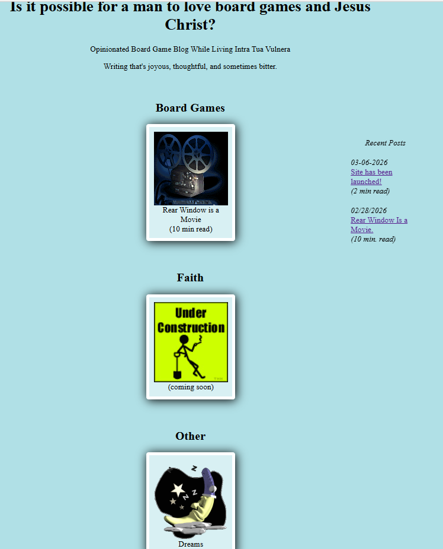

03-06-2026
Alright. There's the site launched. For posterity i've provided a screenshot of what the homepage looks like right now.
Eventually I want to give the homepage a lot more character. But first I'm going to finish more of these pieces. I have 4 google docs that I think are ready to be made into posts. I just have to add images and make it all look nice. Rear Window was the most straightforward so that's why it was finished first. And the Dream Archive barely required any effort to make. Ultimately what keeps me up at night is worrying i'll abandon this project before I've actually finished anything.
I don't plan on keeping this up forever, but I want it to have things on it before I abandon it. Right now my timeline is 24 months. There WILL be an article on here every month for the next 24 months. The whole point of this exercise is to finish things. I've always liked writing for myself and journaling. I want to try my hand at making things for other people to read.
